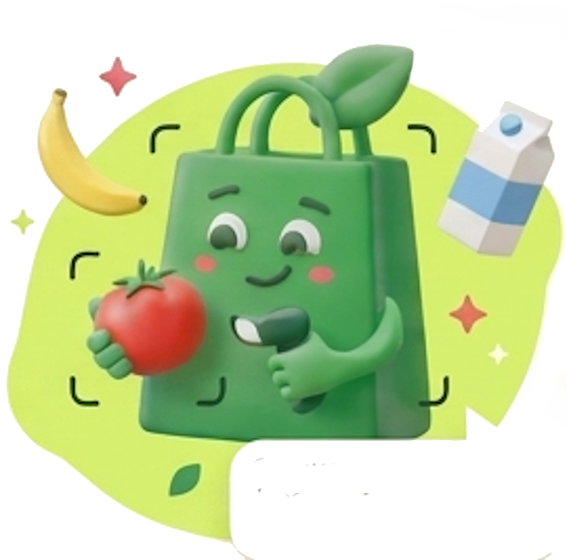
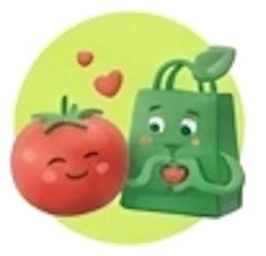

9:41● ◔ ▰
Вкусный знак
Совет дня + шанс на бонус ✦
Ну-ка, что
у тебя вкусного?
Отсканируй продукт — подскажу,
что внутри и с чем его съесть.

⌗Сканируй
→☺Узнавай
→♧Лови бонус
Покажи продукт маскоту — он попробует узнать его
Вкусный знак
● Наведи камеру на продукт
Поймаем
вкусный знак!
Камера готовитсяРазреши доступ и покажи один продукт
👀
Совет маскота: покажи один продукт без упаковки. Фото остаётся в браузере. Штрихкоды пока не читаю.
Вкусный знак

Разглядываю. Я пока маленький…
Томатчик сверяет продукт, калории и БЖУ
Большое старание в маленьком пакетике 💚
Не закрывай экран — знакомство займёт ещё немного времени
Вкусный знак
● Похоже, это помидор
Кажется,
у нас томатч!
Проверь меня: я ещё могу перепутать
Что внутриНа 100 г
18ккал
0,9 гБелки
0,2 гЖиры
3,9 гУглеводы
Клетчатка1,2 г•≈ Средние значения
Томат ищет компанию
Добавь цельнозерновой тост и творог или хумус: больше белка и клетчатки, а перекус — сытнее.
Вкусно. Сытно. Без диетических драм. 😎♧
Не узнал? Не обижайся!Ты всё равно помог маскоту стать умнее 🎁
В демо распознавание работает в браузере. Для продакшена подключается модель продуктов «Перекрёстка».